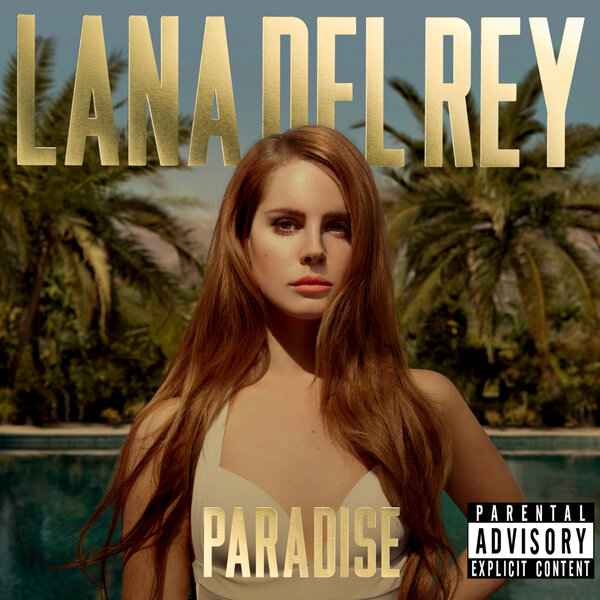
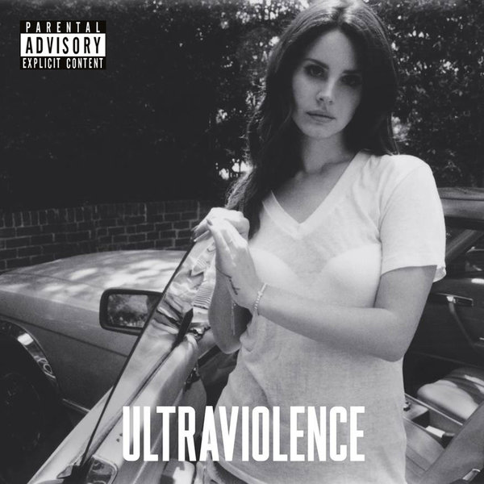
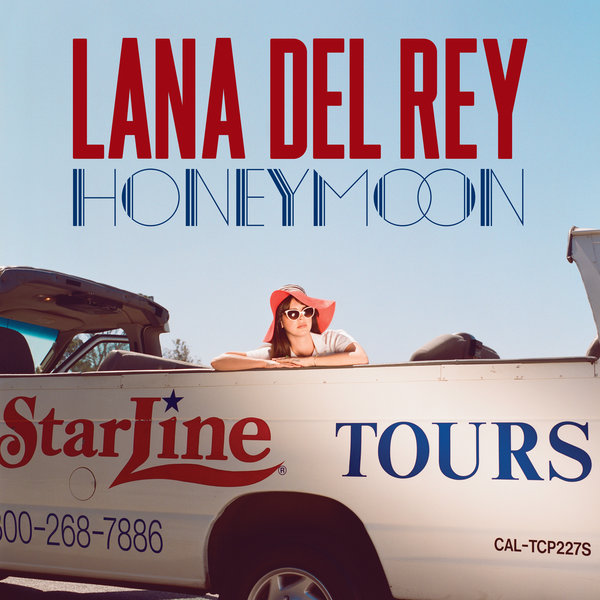

Born To Die

Знаковый студийный альбом американской певицы Ланы Дель Рей, вышедший в 2012 году, который определил её стиль с помощью тем «мрачной любви», голливудского гламура, токсичных отношений, смерти и отчаяния, смешав барокко-поп, трип-хоп и сэдкор.
Born To Die:
Paradise
Paradise — третий мини-альбом и второй крупный релиз американской певицы Ланы Дель Рей. Певица работала над ним в сотрудничестве с такими продюсерами, как DK, Эмиль Хейни, Дэн Хит, Тим Ларкомбе, Рик Ноуэлс и Рик Рубин
Summertime:
Ultraviolence
Третий студийный альбом американской певицы и автора песен Ланы Дель Рей, изданный 13 июня 2014 года на лейблах Interscope и Polydor. После выхода в 2012 году Born to Die Лана не планировала выпускать новую музыку.
Ultraviolence:
Honeymoon
Четвёртый студийный альбом американской певицы Ланы Дель Рей. Певица работала над ним в сотрудничестве с Риком Ноуэлсом и Киероном Мэнзисом. Альбом был издан 18 сентября 2015 года на лейблах Interscope и Polydor.
Salvatore:
Lust For Life

Пятый студийный альбом американской певицы Ланы Дель Рей. Певица работала над ним в сотрудничестве с такими продюсерами, как Рик Ноуэлс, Эмиль Хейни, Бенни Бланко, Киерон Мэнзиес, Макс Мартин.
White Mustang:
The Profile

Сборник американской певицы Ланы Дель Рей, выпущенный в октябре 2015 года. Он не является альбомом, а скорее представляет собой сборник её бесед, который был издан вскоре после выхода её четвертого студийного альбома «Honeymoon».
Born to Sing: